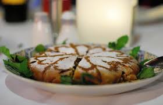

À propos
NutriMaroc est une célébration de la cuisine marocaine — de ses épices, de ses couleurs et de son hospitalité. Découvrez des plats traditionnels revisités et des recettes familiales simples à réaliser.
Nos spécialités
Couscous royal
Un plat traditionnel, symbole de partage et de convivialité.
Tajine d’agneau
Cuit lentement avec des pruneaux, des amandes et des épices marocaines.

Pastilla
Délicieuse combinaison sucrée-salée de poulet et d’amandes.